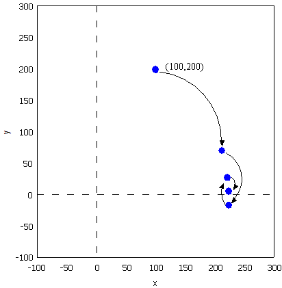

算法
Table of Contents
1 机器学习
1.1 基本概念
- 过拟合：overfitting，一个过分复杂的系统单纯对训练样本集能获得完美的表现，但是对于新鲜样本则可能不令人满意的现象称为过 拟合；
- 样本集合：一般样本集合可以分为
- training set：训练集，用于训练得出我们的候选算法集合；
- validation set：验证集，用于在候选算法集合中选出一个错误率最低的算法；
- test set：测试集，用于测试我们选出的这个错误率最低的算法；
- 样本集打散：假如存在一个N个样本的样本集能够被一个函数集中的函数按照2N种所有可能形式分为2类，则称该函数集能够把样本 数为N的样本集打散(shatter)，其实这里的2类只是一种特例的标记方式，可以延伸到任意一种标记方式，官方的定义为：对于给定集 合S={X1, …, Xi}, 如果一个假设类H能够实现集合S中所有元素的任意一种标记方式，则称H能够打散S，这里的集合S就是上面的N个 样本，假设类H就是上面的函数集，任意一种标记方式的一种特列就是上面的分成2类，如果把2N种分类的每一种看做一个学习问题， 那么2N种学习问题就可以用N个点定义；
- VC维：依照样本集打散的概念，该函数集的VC维就是用这个函数集中的函数能够打散的最大样本集的样本数目, 而所谓的打散，指的是 这个函数集能够按照任意个数的类别来分开这么多个样本，也就是说，若存在N个样本的样本集能够被函数集打散，而不存在N+1个样本 集能够打散，则该函数集的VC维就是N。另外，若对于任意的样本数，总能找到一个样本集能够被这个函数集打散，则函数集的VC维就 是无穷大，当我们在衡量一个函数集能否分类一堆样本时，理论上这个函数集的VC维越大则表示这个函数集能够分类的样本数量越大， 否则越小，但是在实际中，并不是说VC维越大越有用，因为对样本进行分类时并不是说要做到0错误，只需要保证可接受的错误率就行， 这时对函数集的VC维要求就放宽了，一般函数集的VC维越大函数集越复杂越难实现，所以实际中，常常用到的是VC维比较低的函数集；
- PAC: Probably Approximately Correct，概率近似正确(学习模型) ，主要用于解决这一的学习问题：由于我们采集的样本空间不能完 全的满足真正的完整空间的数据，所以我们的样本空间与现实的完整空间存在一定的误差，这将导致我们的学习器通过对样本空间学习 得来的经验不能完全的满足未来新数据的处理，所以提出了PAC学习模型，以使得我们对满足未来新数据的错误率被限制在某常数 ε范围内，ε可以任意小；
- inductive bias：归纳偏置，机器学习试图去建造一个可以学习的算法，用来预测某个目标的结果。要达到此目的，要给于学习算法一 些训练样本，样本说明输入与输出之间的预期关系。然后假设学习器在预测中逼近正确的结果，其中包括在训练中未出现的样本。既然 未知状况可以是任意的结果，若没有其它额外的假设，这任务就无法解决。这种关于目标函数的必要假设就称为归纳偏置；
- generalization：一般化，指的是，我们通过样本集训练出的算法可以推广到未知输入得到正确输出；
- Loss function:损失函数，表示实际输出值与我们拟合算法输出值的差；
1.2 cordic算法
三角函数的计算是个复杂的主题，有计算机之前，人们通常通过查找三角函数表来计算任意角度的三角函数的值。这种表格在人们刚刚产 生三角函数的概念的时候就已经有了，它们通常是通过从已知值（比如sin(π/2)=1）开始并重复应用半角和和差公式而生成。现在有了 计算机，三角函数表便推出了历史的舞台。但是像我这样的喜欢刨根问底的人，不禁要问计算机又是如何计算三角函数值的呢。最容易想 到的办法就是利用级数展开，比如泰勒级数来逼近三角函数，只要项数取得足够多就能以任意的精度来逼近函数值。除了泰勒级数逼近之 外，还有其他许多的逼近方法，比如切比雪夫逼近、最佳一致逼近和Padé逼近等。所有这些逼近方法本质上都是用多项式函数来近似我 们要计算的三角函数，计算过程中必然要涉及到大量的浮点运算。在缺乏硬件乘法器的简单设备上（比如没有浮点运算单元的单片机）， 用这些方法来计算三角函数会非常的费时。为了解决这个问题，J. Volder于1959年提出了一种快速算法，称之为cordic(coordinate rotation digital computer) 算法，这个算法只利用移位和加减运算，就能计算常用三角函数值，如sin，cos，sinh，cosh等函数。 J. Walther在1974年在这种算法的基础上进一步改进，使其可以计算出多种超越函数，更大的扩展了Cordic 算法的应用。因为Cordic算 法只用了移位和加法，很容易用纯硬件来实现，因此我们常能在FPGA运算平台上见到它的身影。不过，大多数的软件程序员们都没有听说 过这种算法，也更不会主动的去用这种算法。其实，在嵌入式软件开发，尤其是在没有浮点运算指令的嵌入式平台（比如定点型DSP）上 做开发时，还是会遇上可以用到cordic 算法的情况的，所以掌握基本的cordic算法还是有用的。
1.2.1 背景
三角函数的计算是个复杂的主题，有计算机之前，人们通常通过查找三角函数表来计算任意角度的三角函数的值。这种表格在人们刚刚产 生三角函数的概念的时候就已经有了，它们通常是通过从已知值（比如sin(π/2)=1）开始并重复应用半角和和差公式而生成。 现在有了计算机，三角函数表便推出了历史的舞台。但是像我这样的喜欢刨根问底的人，不禁要问计算机又是如何计算三角函数值的呢。 最容易想到的办法就是利用级数展开，比如泰勒级数来逼近三角函数，只要项数取得足够多就能以任意的精度来逼近函数值。除了泰勒级 数逼近之外，还有其他许多的逼近方法，比如切比雪夫逼近、最佳一致逼近和Padé逼近等。 所有这些逼近方法本质上都是用多项式函数来近似我们要计算的三角函数，计算过程中必然要涉及到大量的浮点运算。在缺乏硬件乘法器 的简单设备上（比如没有浮点运算单元的单片机），用这些方法来计算三角函数会非常的费时。为了解决这个问题，J. Volder于1959年 提出了一种快速算法，称之为cordic(coordinate rotation digital computer) 算法，这个算法只利用移位和加减运算，就能计算常用 三角函数值，如sin，cos，sinh，cosh等函数。 J. Walther在1974年在这种算法的基础上进一步改进，使其可以计算出多种超越函数， 更大的扩展了cordic 算法的应用。因为cordic 算法只用了移位和加法，很容易用纯硬件来实现，因此我们常能在fpga运算平台上见到它 的身影。不过，大多数的软件程序员们都没有听说过这种算法，也更不会主动的去用这种算法。其实，在嵌入式软件开发，尤其是在没有 浮点运算指令的嵌入式平台（比如定点型dsp）上做开发时，还是会遇上可以用到cordic 算法的情况的，所以掌握基本的cordic算法还是 有用的。
1.2.2 从二分查找法说起
先从一个例子说起，知道平面上一点在直角坐标系下的坐标（X,Y）=（100，200），如何求的在极坐标系下的坐标（ρ,θ）。用计算器 计算一下可知答案是（223.61，63.435），见图img-cordic1所示。
直角坐标系到极坐标系的转换
为了突出重点，这里我们只讨论X和Y都为正数的情况。这时\(θ=atan(y/x)\)。求θ的过程也就是求atan 函数的过程。cordic算法采用 的想法很直接，将（X，Y）旋转一定的度数，如果旋转完纵坐标变为了0，那么旋转的度数就是θ。坐标旋转的公式可能大家都忘了，这 里把公式列出了。设（x,y）是原始坐标点，将其以原点为中心，顺时针旋转θ之后的坐标记为（x’,y’）,则有如下公式： $$ f(x)=\left\{ \begin{aligned} x' & = & x\cos(\Theta) + ysin(\Theta) \\ y' & = & -x\sin(\Theta) + ycos(\Theta) \\ \end{aligned} \right. $$ 也可以写成矩阵形式： $$ {x' \choose y'}={cos(\Theta) \quad sin(\Theta) \choose -sin(\Theta) \quad cos(\Theta)}{x \choose y} $$ 如何旋转呢，可以借鉴二分查找法的思想。我们知道θ的范围是0到90度。那么就先旋转45度试试。 $$ {212.13 \choose 70.711} = {cos(45^{\circ}) \quad sin(45^{\circ}) \choose -sin(45^{\circ}) \quad cos(45^{\circ})}{100 \choose 200}$$ 旋转之后纵坐标为70.71，还是大于0，说明旋转的度数不够，接着再旋转22.5度（45度的一半）。 $${223.04 \choose -15.85} = {cos(45^{\circ}/2) \quad sin(45^{\circ}/2) \choose -sin(45^{\circ}/2) \quad cos(45^{\circ}/2)} {212.13 \choose 70.711} $$ 这时总共旋转了45+22.5=67.5度。结果纵坐标变为了负数，说明θ<67.5度，这时就要往回转，还是二分查找法的思想，这次转11.25度。 $${221.85 \choose 27.967} = {cos(-45^{\circ}/4) \quad sin(-45^{\circ}/4) \choose -sin(-45^{\circ}/4) \quad cos(-45^{\circ}/4)} {223.04 \choose -15.851} $$ 这时总共旋转了45+22.5-11.25=56.25度。又转过头了，接着旋转，这次顺时针转5.625度。 $${223.52 \choose 6.0874} = {cos(45^{\circ}/8) \quad sin(45^{\circ}/8) \choose -sin(45^{\circ}/8) \quad cos(45^{\circ}/8)} {221.85 \choose 27.967} $$ 这时总共旋转了45+22.5-11.25+5.625=61.875度。这时纵坐标已经很接近0了。我们只是说明算法的思想，因此就不接着往下计算了。计 算到这里我们给的答案是 61.875±5.625。二分查找法本质上查找的是一个区间，因此我们给出的是θ值的一个范围。同时，坐标到原点 的距离ρ也求出来了，ρ=223.52。与标准答案比较一下计算的结果还是可以的。旋转的过程图示如img-trans。

旋转过程图
可能有读者会问，计算中用到了sin函数和cos函数，这些值又是怎么计算呢。很简单，我们只用到很少的几个特殊点的sin 函数和 cos 函数的值，提前计算好存起来，用时查表。
#include <stdio.h>
#include <stdlib.h>
double my_atan2(double x, double y);
int main(void)
{
double z = my_atan2(100.0, 200.0);
printf("\n z = %f \n", z);
return 0;
}
double my_atan2(double x, double y)
{
const double sine[] = {0.7071067811865,0.3826834323651,0.1950903220161,0.09801714032956,
0.04906767432742,0.02454122852291,0.01227153828572,0.006135884649154,0.003067956762966
,0.001533980186285,7.669903187427045e-4,3.834951875713956e-4,1.917475973107033e-4,
9.587379909597735e-5,4.793689960306688e-5,2.396844980841822e-5
};
const double cosine[] = {0.7071067811865,0.9238795325113,0.9807852804032,0.9951847266722,
0.9987954562052,0.9996988186962,0.9999247018391,0.9999811752826,0.9999952938096,
0.9999988234517,0.9999997058629,0.9999999264657,0.9999999816164,0.9999999954041,
0.999999998851,0.9999999997128
};
int i = 0;
double x_new, y_new;
double angleSum = 0.0;
double angle = 45.0;
for(i = 0; i < 15; i++)
{
if(y > 0)
{
x_new = x * cosine[i] + y * sine[i];
y_new = y * cosine[i] - x * sine[i];
x = x_new;
y = y_new;
angleSum += angle;
}
else
{
x_new = x * cosine[i] - y * sine[i];
y_new = y * cosine[i] + x * sine[i];
x = x_new;
y = y_new;
angleSum -= angle;
}
printf("Debug: i = %d angleSum = %f, angle = %f\n", i, angleSum, angle);
angle /= 2;
}
return angleSum;
}
程序运行的输出结果如下：
Debug: i = 0 angleSum = 45.000000, angle = 45.000000 Debug: i = 1 angleSum = 67.500000, angle = 22.500000 Debug: i = 2 angleSum = 56.250000, angle = 11.250000 Debug: i = 3 angleSum = 61.875000, angle = 5.625000 Debug: i = 4 angleSum = 64.687500, angle = 2.812500 Debug: i = 5 angleSum = 63.281250, angle = 1.406250 Debug: i = 6 angleSum = 63.984375, angle = 0.703125 Debug: i = 7 angleSum = 63.632813, angle = 0.351563 Debug: i = 8 angleSum = 63.457031, angle = 0.175781 Debug: i = 9 angleSum = 63.369141, angle = 0.087891 Debug: i = 10 angleSum = 63.413086, angle = 0.043945 Debug: i = 11 angleSum = 63.435059, angle = 0.021973 Debug: i = 12 angleSum = 63.424072, angle = 0.010986 Debug: i = 13 angleSum = 63.429565, angle = 0.005493 Debug: i = 14 angleSum = 63.432312, angle = 0.002747 z = 63.432312
1.2.3 减少乘法运算
现在已经有点cordic算法的样子了，但是我们看到没次循环都要计算4次浮点数的乘法运算，运算量还是太大了。还需要进一步的改 进。改进的切入点当然还是坐标变换的过程。我们将坐标变换公式变一下形。 $${x' \choose y'} = {cos(\Theta) \quad sin(\Theta) \choose -sin(\Theta) \quad cos(\Theta)} {x \choose y} = cos(\Theta){1 \quad tan(\Theta) \choose -tan(\Theta) \quad 1}{x \choose y}$$ 可以看出 cos(θ)可以从矩阵运算中提出来。我们可以做的再彻底些，直接把 cos(θ) 给省略掉。省略cos(θ)后发生了什么呢，每次旋 转后的新坐标点到原点的距离都变长了，放缩的系数是1/cos(θ)。不过没有关系，我们求的是θ，不关心ρ的改变。这样的变形非常的 简单，但是每次循环的运算量一下就从4次乘法降到了2次乘法了。还是给出 C 语言的实现：
double my_atan3(double x, double y)
{
const double tangent[] = {1.0,0.4142135623731,0.1989123673797,0.09849140335716,0.04912684976947,
0.02454862210893,0.01227246237957,0.006136000157623,0.003067971201423,
0.001533981991089,7.669905443430926e-4,3.83495215771441e-4,1.917476008357089e-4,
9.587379953660303e-5,4.79368996581451e-5,2.3968449815303e-5
};
int i = 0;
double x_new, y_new;
double angleSum = 0.0;
double angle = 45.0;
for(i = 0; i < 15; i++)
{
if(y > 0)
{
x_new = x + y * tangent[i];
y_new = y - x * tangent[i];
x = x_new;
y = y_new;
angleSum += angle;
}
else
{
x_new = x - y * tangent[i];
y_new = y + x * tangent[i];
x = x_new;
y = y_new;
angleSum -= angle;
}
printf("Debug: i = %d angleSum = %f, angle = %f, ρ = %f\n", i, angleSum, angle, hypot(x,y));
angle /= 2;
}
return angleSum;
}
计算的结果是：
Debug: i = 0 angleSum = 45.000000, angle = 45.000000, ρ = 316.227766 Debug: i = 1 angleSum = 67.500000, angle = 22.500000, ρ = 342.282467 Debug: i = 2 angleSum = 56.250000, angle = 11.250000, ρ = 348.988177 Debug: i = 3 angleSum = 61.875000, angle = 5.625000, ρ = 350.676782 Debug: i = 4 angleSum = 64.687500, angle = 2.812500, ρ = 351.099697 Debug: i = 5 angleSum = 63.281250, angle = 1.406250, ρ = 351.205473 Debug: i = 6 angleSum = 63.984375, angle = 0.703125, ρ = 351.231921 Debug: i = 7 angleSum = 63.632813, angle = 0.351563, ρ = 351.238533 Debug: i = 8 angleSum = 63.457031, angle = 0.175781, ρ = 351.240186 Debug: i = 9 angleSum = 63.369141, angle = 0.087891, ρ = 351.240599 Debug: i = 10 angleSum = 63.413086, angle = 0.043945, ρ = 351.240702 Debug: i = 11 angleSum = 63.435059, angle = 0.021973, ρ = 351.240728 Debug: i = 12 angleSum = 63.424072, angle = 0.010986, ρ = 351.240734 Debug: i = 13 angleSum = 63.429565, angle = 0.005493, ρ = 351.240736 Debug: i = 14 angleSum = 63.432312, angle = 0.002747, ρ = 351.240736 z = 63.432312
1.2.4 消除乘法运算
我们已经成功的将乘法的次数减少了一半，还有没有可能进一步降低运算量呢？还要从计算式入手。第一次循环时，tan(45)=1，所以第 一次循环实际上是不需要乘法运算的。第二次运算呢？ tan(22.5)=0.4142135623731,很不幸，第二次循环乘数是个很不整的小数。是否能对其改造一下呢？答案是肯定的。第二次选择22.5度是 因为二分查找法的查找效率最高。如果选用个在22.5到45度之间的值，查找的效率会降低一些。如果稍微降低一点查找的效率能让我们有 效的减少乘法的次数，使最终的计算速度提高了，那么这种改进就是值得的。 我们发现tan(26.565051177078)=0.5，如果我们第二次旋转采用26.565051177078度，那么乘数变为0.5，如果我们采用定点数运算的话 （没有浮点协处理器时为了加速计算我们会大量的采用定点数算法）乘以0.5就相当于将乘数右移一位。右移运算是很快的，这样第二次 循环中的乘法运算也被消除了。类似的方法，第三次循环中不用11.25度，而采用 14.0362434679265 度。tan(14.0362434679265)= 1/4 乘数右移两位就可以了。剩下的都以此类推。
tan(45)= 1 tan(26.565051177078)= 1/2 tan(14.0362434679265)= 1/4 tan(7.1250163489018)= 1/8 tan(3.57633437499735)= 1/16 tan(1.78991060824607)= 1/32 tan(0.8951737102111)= 1/64 tan(0.4476141708606)= 1/128 tan(0.2238105003685)= 1/256
还是给出C语言的实现代码，我们采用循序渐进的方法，先给出浮点数的实现（因为用到了浮点数，所以并没有减少乘法运算量，查找的 效率也比二分查找法要低，理论上说这个算法实现很低效。不过这个代码的目的在于给出算法实现的示意性说明，还是有意义的）。
double my_atan4(double x, double y)
{
const double tangent[] = {1.0, 1 / 2.0, 1 / 4.0, 1 / 8.0, 1 / 16.0,
1 / 32.0, 1 / 64.0, 1 / 128.0, 1 / 256.0, 1 / 512.0,
1 / 1024.0, 1 / 2048.0, 1 / 4096.0, 1 / 8192.0, 1 / 16384.0
};
const double angle[] = {45.0, 26.565051177078, 14.0362434679265, 7.1250163489018, 3.57633437499735,
1.78991060824607, 0.8951737102111, 0.4476141708606, 0.2238105003685, 0.1119056770662,
0.0559528918938, 0.027976452617, 0.01398822714227, 0.006994113675353, 0.003497056850704
};
int i = 0;
double x_new, y_new;
double angleSum = 0.0;
for(i = 0; i < 15; i++)
{
if(y > 0)
{
x_new = x + y * tangent[i];
y_new = y - x * tangent[i];
x = x_new;
y = y_new;
angleSum += angle[i];
}
else
{
x_new = x - y * tangent[i];
y_new = y + x * tangent[i];
x = x_new;
y = y_new;
angleSum -= angle[i];
}
printf("Debug: i = %d angleSum = %f, angle = %f, ρ = %f\n", i, angleSum, angle[i], hypot(x, y));
}
return angleSum;
}
程序运行的输出结果如下：
Debug: i = 0 angleSum = 45.000000, angle = 45.000000, ρ = 316.227766 Debug: i = 1 angleSum = 71.565051, angle = 26.565051, ρ = 353.553391 Debug: i = 2 angleSum = 57.528808, angle = 14.036243, ρ = 364.434493 Debug: i = 3 angleSum = 64.653824, angle = 7.125016, ρ = 367.270602 Debug: i = 4 angleSum = 61.077490, angle = 3.576334, ρ = 367.987229 Debug: i = 5 angleSum = 62.867400, angle = 1.789911, ρ = 368.166866 Debug: i = 6 angleSum = 63.762574, angle = 0.895174, ρ = 368.211805 Debug: i = 7 angleSum = 63.314960, angle = 0.447614, ρ = 368.223042 Debug: i = 8 angleSum = 63.538770, angle = 0.223811, ρ = 368.225852 Debug: i = 9 angleSum = 63.426865, angle = 0.111906, ρ = 368.226554 Debug: i = 10 angleSum = 63.482818, angle = 0.055953, ρ = 368.226729 Debug: i = 11 angleSum = 63.454841, angle = 0.027976, ρ = 368.226773 Debug: i = 12 angleSum = 63.440853, angle = 0.013988, ρ = 368.226784 Debug: i = 13 angleSum = 63.433859, angle = 0.006994, ρ = 368.226787 Debug: i = 14 angleSum = 63.437356, angle = 0.003497, ρ = 368.226788 z = 63.437356
有了上面的准备，我们可以来讨论定点数算法了。所谓定点数运算，其实就是整数运算。我们用256 表示1度。这样的话我们就可以精确 到1/256=0.00390625 度了，这对于大多数的情况都是足够精确的了。256 表示1度，那么45度就是 45*256 = 115200。其他的度数以此类 推, 迭代次数见表\ref(tbl-dedaicishu)。
| number | angle | anglex256 | integer |
|---|---|---|---|
| 1 | 45.0 | 11520 | 11520 |
| 2 | 26.565051177078 | 6800.65310133196 | 6801 |
| 3 | 14.0362434679265 | 3593.27832778918 | 3593 |
| 4 | 7.1250163489018 | 1824.00418531886 | 1824 |
| 5 | 3.57633437499735 | 915.541599999322 | 916 |
| 6 | 1.78991060824607 | 458.217115710994 | 458 |
| 7 | 0.8951737102111 | 229.164469814035 | 229 |
| 8 | 0.4476141708606 | 114.589227740302 | 115 |
| 9 | 0.2238105003685 | 57.2954880943458 | 57 |
| 10 | 0.1119056770662 | 28.647853328949 | 29 |
| 11 | 0.0559528918938 | 14.3239403248137 | 14 |
| 12 | 0.027976452617 | 7.16197186995294 | 7 |
| 13 | 0.01398822714227 | 3.58098614841984 | 4 |
| 14 | 0.006994113675353 | 1.79049310089035 | 2 |
| 15 | 0.003497056850704 | 0.8952465537802 | 1 |
int my_atan5(int x, int y)
{
const int angle[] = {11520, 6801, 3593, 1824, 916, 458, 229, 115, 57, 29, 14, 7, 4, 2, 1};
int i = 0;
int x_new, y_new;
int angleSum = 0;
x *= 1024;// 将 X Y 放大一些，结果会更准确
y *= 1024;
for(i = 0; i < 15; i++)
{
if(y > 0)
{
x_new = x + (y >> i);
y_new = y - (x >> i);
x = x_new;
y = y_new;
angleSum += angle[i];
}
else
{
x_new = x - (y >> i);
y_new = y + (x >> i);
x = x_new;
y = y_new;
angleSum -= angle[i];
}
printf("Debug: i = %d angleSum = %d, angle = %d\n", i, angleSum, angle[i]);
}
return angleSum;
}
计算结果如下:
Debug: i = 0 angleSum = 11520, angle = 11520 Debug: i = 1 angleSum = 18321, angle = 6801 Debug: i = 2 angleSum = 14728, angle = 3593 Debug: i = 3 angleSum = 16552, angle = 1824 Debug: i = 4 angleSum = 15636, angle = 916 Debug: i = 5 angleSum = 16094, angle = 458 Debug: i = 6 angleSum = 16323, angle = 229 Debug: i = 7 angleSum = 16208, angle = 115 Debug: i = 8 angleSum = 16265, angle = 57 Debug: i = 9 angleSum = 16236, angle = 29 Debug: i = 10 angleSum = 16250, angle = 14 Debug: i = 11 angleSum = 16243, angle = 7 Debug: i = 12 angleSum = 16239, angle = 4 Debug: i = 13 angleSum = 16237, angle = 2 Debug: i = 14 angleSum = 16238, angle = 1 z = 16238
16238/256=63.4296875度，精确的结果是63.4349499度，两个结果的差为0.00526，还是很精确的。 到这里cordic算法的最核心的思想就介绍完了。当然，这里介绍的只是cordic算法最基本的内容，实际上，利用cordic 算法不光可以 计算 atan 函数，其他的像 sin，cos，sinh，cosh 等一系列的函数都可以计算，不过那些都不在本文的讨论范围内了。另外，每次旋转 时到原点的距离都会发生变化，而这个变化是确定的，因此可以在循环运算结束后以此补偿回来，这样的话我们就同时将（ρ,θ）都计 算出来了。
1.3 k临近算法
K临近算法举例，已知若干电影(训练集)的标签有“爱情片”，“动作片”，而这些标 签大体是由这些电影中所含的打斗场景和接吻场景次数(特征)决定。现在有一部电影 已知打斗场景和接吻场景次数，但是标签未知，需要判断。则可以计算由这些特征组 成的样本点之间的距离，并选出离训练集中前k个最近的点，再统计这k个样本点的标 签占比，占比多的就是该新电影的标签。实例代码如下，我们有由createDataSet函数 生成一个测试样本和标签集，其中array的每个元素代表一个已知样本，而每个已知样 本的各个元素代表其特征值，labels给出了group的每个样本的标签；实质上也是欧式 距离的应用。 注意: 要运行必须要删除所有的中文注释。
import numpy as np
import scipy as sp
import operator
def createDataSet():
group = np.array([[1.0, 1.1], [1.0, 1.0], [0, 0], [0, 0.1]])
labels = ['A', 'A', 'B', 'B']
return group, labels
# inX和dataSet的行向量应该是一致的
# 每个行代表一个样本
def classify0(inX, dataSet, labels, k):
# dataSet是一个numpy array，shape属性包含行数和列数，比如shape[0]给出行数，shape[1]给出列数，这里我们需要行数，它对
# 应于观察点(dataSet)的数目，列数对应每个点对应的特征项
dataSetSize = dataSet.shape[0]
# inX是一个list，这一行表示将inX复制总共dataSetSize次，tile函数第一个参数表示需要复制的量，第二个参数表示需要复制的
# 形式，也就是说将inX复制dataSetSize行，1列，其维度满足dataSet
matrExt = tile(inX, (dataSetSize, 1))
# 开始计算inX和dataSet中每个样本的距离
diffMat = matrExt - dataSet
sqDiffMat = diffMat**2
# 以列维度相加, 如果axis=0, 将以行维度进行相加，如果直接用sum()将会计算所有元素的和
sqDistances = sqDiffMat.sum(axis=1)
distances = sqDistances**0.5
# argsort函数返回数组值从小到大的索引值
sortedDistInddicies = distances.argsort()
# 建立一个空字典/哈希表/映射:键值为label;值为每个label出现的频率
classCount={}
# 这里主要进行投票
for i in range(k):
# 寻找到前K个距离最近点的标签，然后对每个标签在字典classCount里面统计出现的次数
voteIlabel = labels[sortedDistInddicies[i]]
# dict.get(key, default=None)
# key 字典中要查找的键。default 如果指定键的值不存在，返回该默认值值。
# 已labels为标签下标，统计每个标签所出现的频率
classCount[voteIlabel]=classCount.get(voteIlabel, 0)+1
# 最终得到的classCount大概长这样{'A': 3, 'C': 5, 'B': 2}，也就是意味着标签C出现的次数最多，目的就是要返回最多的，下
# 面这行代码将字典排序成list，大的在前
# classCount.items(), 将得到dict_items([('c', 5), ('b', 2), ('a', 3)])
# operator.itemgetter(1)定义了一个函数，获取对象上的值，必须要作用到对象上才行
# Python内置的排序函数sorted可以对list或者iterator进行排序;
# 综合来看下面先将classCount转化为list，元素为元组，然后key指定排序时使用的排序方法(元组的第1个元素)，由reverse指定
# 是逆序排序
# 最后sortedClassCount形如[('c', 5), ('a', 3), ('b', 2)]
sortedClassCount = sorted(classCount.items(), key=operator.itemgetter(1), reverse = True)
# 返回'c'
return sortedClassCount[0][0]
point0 = [0, 0]
g, l = createDataSet()
print("resualt: %r" %classify0(point0, g, l, 3))
1.4 决策树
1.4.1 信息熵
信息熵用来衡量信息量的大小
- 若某个集合中不确定性越大，则信息量越大，熵越大；
- 若某个集合中不确定性越小，则信息量越小，熵越小；
定义：一个值域为\({x_{1}...x_{n}}\)的随机变量X的信息熵H定义为： $$H(X) = E(I(X))$$ 其中，E代表期望函数，I(X)是X的信息量，I(X)本身也是个随机变量，如果p是概率函 数，则H(X)可以表示为 $$H(X)=\sum_{i=1}^{n}p(x_{i})I(x_{i})=-\sum_{i=1}^{n}p(x_{i})log_{b}p(x_{i})$$ 在这里b是对数所使用的底。
- 当b=2时熵的单位是bit；
- 当b=e时熵单位是nat；
- 当b=10时熵单位是dit。
1.4.2 算法逻辑
构建决策树的过程，就是减小信息熵，减小不确定性。从而完整构造决策树模型。所 以我们需要在每一次选择分支属性时，计算这样分类所带来的信息熵的增益，增益越 大，不确定性越小，最终也就是我们要选择的分支属性。
- 首先, 我们会在未进行任何分类前求取一个信息熵，这个信息熵涉及到只是简单的 求取样本标签的分布，然后按照公式求解信息熵。
- 然后，在选用某一个属性作为分支属性后，我们需要计算每一个子分支中的样本标 签的分布，然后计算每个子样本的信息熵，最后加权平均（期望），求得总信息熵。
- 计算前后两个信息熵的差值，选择最大的增益属性作为分支属性。一直递归下去， 对每一个子样本套用上述方法。直到所有的样本都被归类于某个叶节点，即不可再 分为止。
以上方法是 ID3 方法，还有更好的 C4.5 方法，C4.5方法选用信息增益比，克服 了ID3使用信息增益选择属性时偏向取值较多的属性的不足。
1.4.3 算法实例
1.4.3.1 计算香农熵
根据信息熵的计算公式计算某个数据集中的信息熵。一组数据dataSet包含若干特征属 性和一个标签，即某个标签具有若干属性，每个标签和属性都有若干值。以某个标签 为基准计算所有标签值的香农熵。数据集可以用Excel表格表示，每一行代表一个数据， 每一列代表数据的一个特征，最后一列代表数据的标签，比如加速度值，每一行代表 采集的一次加速度值，包含3列xyz，表示3个轴的加速度分量，最后一列表示标签，可 以取'跑步','走路'等值，代码
# dataSet：数据集
def calcShannonEnt(dataSet):
numEntries = len(dataSet)
labelCounts = {} #标签，键是标签的值，值是每个标签值的个数
for featVec in dataSet: #featVec是dataSet中的某组数据记录
currentLabel = featVec[-1] #featVec[-1]表示某组数据的标签
# 统计每个标签值的个数
if currentLabel not in labelCounts.keys():
labelCounts[currentLabel] = 0
labelCounts[currentLabel] += 1
shannonEnt = 0.0
# 计算每种标签值的频率以及香农熵统计
for key in labelCounts:
prob = float(labelCounts[key])/numEntries
shannonEnt -= prob * log(prob,2) #log base 2
return shannonEnt
1.4.3.2 划分数据集
指按照给定的特征以及特征的值提取出这样的数据集。代码
# dataSet：数据集
# axis：取值x或y或z
# value：表示某个x(yz)分量的值
# return：返回在dataSet中删除了axis列的，数据，这些数据的axis列值等于value
def splitDataSet(dataSet, axis, value):
retDataSet = []
for featVec in dataSet:
if featVec[axis] == value:
reducedFeatVec = featVec[:axis]
reducedFeatVec.extend(featVec[axis+1:])
retDataSet.append(reducedFeatVec)
return retDataSet
1.4.3.3 选择最好的划分
在不同的特征，不同的特征值情况下，计算被splitDataSet()提取出来的数据集的香 农熵。然后按照一定的比例计算每个特征的香农熵总和，得出按照该特征划分时的效 果量化值。最后比较每种按特征划分后的香农熵，找出最大香农熵的一种划分方式。
def chooseBestFeatureToSplit(dataSet):
numFeatures = len(dataSet[0]) - 1 # 特征个数
baseEntropy = calcShannonEnt(dataSet) #原始香农熵
bestInfoGain = 0.0; bestFeature = -1
# 遍历每个特征
for i in range(numFeatures): #iterate over all the features
# python的list推导式
featList = [example[i] for example in dataSet]
uniqueVals = set(featList) #get a set of unique values
newEntropy = 0.0
# 遍历当前特征下每个特征值
for value in uniqueVals:
# 计算当前特征，当前特征值提取出的数据集
subDataSet = splitDataSet(dataSet, i, value)
# 计算当前特征值占该特征数量的比例
prob = len(subDataSet)/float(len(dataSet))
# 计算当前特征的加权香农熵
newEntropy += prob * calcShannonEnt(subDataSet)
# 计算香农熵增益
infoGain = baseEntropy - newEntropy
# 提炼出最大香农熵增益下的特征序号
if (infoGain > bestInfoGain):
bestInfoGain = infoGain
bestFeature = i
return bestFeature #returns an integer
1.4.3.4 构造决策树
采用递归将决策树存储在字典中，使用字典可以存在于字典中的特性。最终，字典将 是，使用特征标签作为key，其value要么是类别标签作为树的终止叶子节点，要么是 另一个字典，以此递归。
def createTree(dataSet, labels):
# 数据集的类别标签
classList = [example[-1] for example in dataSet]
#类别完全相同则停止继续划分 返回类标签-叶子节点
if classList.count(classList[0]) == len(classList):
return classList[0]
#遍历完所有的特征时返回出现次数最多的
if len(dataSet[0]) == 1:
return majorityCnt(classList)
bestFeat = chooseBestFeatureToSplit(dataSet)
bestFeatLabel = labels[bestFeat]
# 每一级递归中用类别标签作为key，其value将是该标签的每个值
myTree = {bestFeatLabel:{}}
# 删除一个特征标签
del(labels[bestFeat])
# 得到的列表包含所有的属性值
featValues = [example[bestFeat] for example in dataSet]
uniqueVals = set(featValues)
# 遍历每个值作为字典的value
for value in uniqueVals:
subLabels = labels[:]
# 其值就是上面的两个终止条件返回的类别标签
myTree[bestFeatLabel][value] = createTree(splitDataSet(dataSet, bestFeat, value), subLabels)
return myTree
1.5 回归分析
回归是一种极易理解的模型，就相当于\(y=f(x)\)，表明自变量x与因变量y的关系。最常见问题有如医生治病时的望、闻、问、切，之后 判定病人是否生病或生了什么病，其中的望闻问切就是获取自变量x，即特征数据，判断是否生病就相当于获取因变量y，即预测分类。 随机变量间的关系，可以从多个角度来分析, 并可以参考相关系数 。
- 从涉及的变量数量看
- 简单相关：两个变量间；
- 多重相关：多个变量间；
- 从变量相关关系的表现形式看：
- 线性相关：散布图上样本接近一条直线；
- 非线性相关：散布图上样本接近一条曲线；
- 从变量相关关系变化的方向看：
- 正相关：变量同方向变化，同增同减；
- 负相关：变量反方向变化，一增一减；
- 不相关：无规律；
关于回归分析问题的一般步骤如下
- 寻找H函数：hypothesis，即模型假设；
- 构造J函数：即损失函数，比如最小二乘法；
- 求模型参数：想办法使得J函数最小求出模型参数，常用最大似然，梯度下降，这一套可以归咎为 最优化理论 。
1.5.1 线性回归
最简单的回归就是线性回归，包括单变量回归，和多变量回归。一个坐标系下(可以是n维)，有若干个点，找一直线(或其他图，圆)来最 大可能的近似这些点的走势趋势，然后使用最小二乘法等方法接触相应的参数，就是线性回归，另外线性回归 是以 高斯分布 为误差分 析模型。用向量来表示，数据集的模型可以这样表示 $$ h_{\theta}(x)=\theta^{T}\chi$$ 也就是带了一系列的参数\(\theta\)和一系 列的维度变量\(x_{i}\), 这就是一个组合问题，已知一些数据，如何求里面的未知参数，给出一个最优解。 一个线性矩阵方程，直接求 解，很可能无法直接求解。有唯一解的数据集，微乎其微。基本上都是解不存在的超定方程组。因此，需要退一步，将参数求解问题，转 化为求最小误差问题，求出一个最接近的解，这就是一个松弛求解。 求一个最接近解，直观上，就能想到，误差最小的表达形式。仍然 是一个含未知参数的线性模型，一堆观测数据，其模型与数据误差最小的形式，模型与数据差的平方和最小, 这就是损失函数的来源。求 解方法有 $$ J(\theta)=\frac{\sum_{i=1}^{m}(h_{\theta}(x^{i})-y^{i})^{2}}{2}$$
- 最小二乘法：是一个直接的数学求解公式，不过它要求X是列满秩的；
- 梯度下降法：分别有梯度下降法，批梯度下降法，增量梯度下降。本质上，都是偏导数，步长/最佳学习率，更新，收敛的问题。这个 算法只是最优化原理中的一个普通的方法；
1.5.1.1 普通最小二乘法
ordinary least squares的基本思想是
- 不同的估计方法可以得到不同的样本回归参数 \(\widehat{\beta_{1}}\) 和 \(\widehat{\beta_{2}}\) , 所估计的 \(\widehat{Y_{i}}\) 也就不同。
- 理想的估计方法应使 \(\widehat{Y_{i}}\) 与Yi的差即剩余ei越小越好；
- 因ei可正可负，所以可以取 \(\sum e_{i}^{2}\) 最小，即， \(min\sum e_{i}^{2} = ORG-LIST-END-MARKER min\sum(Y_{i}-\widehat{\beta_{1}}-\widehat{\beta_{2}}X_{i})^{2}\) ; 在观测值Y和X取定值后， \(\sum e_{i}^{2}\) 的大小决定于 \(\widehat{\beta_{1}}\) 和 \(\widehat{\beta_{2}}\) ，取偏导数并令其为0， 得到 $$ \frac{\partial(\sum e_{i}^{2})}{\partial \widehat{\beta_{1}}}=-2\sum(Y_{i}-\widehat{\beta_{1}}-\widehat{\beta_{2}}X_{i}) = 0$$ $$ \frac{\partial(\sum e_{i}^{2})}{\partial \widehat{\beta_{2}}}=-2\sum(Y_{i}-\widehat{\beta_{1}}-\widehat{\beta_{2}}X_{i})X_{i} = 0$$ 或者 $$ \sum Y_{i} = n\widehat{\beta_{1}}+\widehat{\beta_{2}}\sum X_{i}$$ $$ \sum Y_{i}X_{i} = \widehat{\beta_{1}}\sum X_{i} + \widehat{\beta_{2}}\sum X_{i}^{2}$$ 用克莱姆法则求得 $$ \widehat{\beta_{2}}=\frac{n\sum X_{i}Y_{i} - \sum X_{i}\sum Y_{i}}{n\sum X_{i}^{2}-(\sum X_{i})^{2})}$$ $$ \widehat{\beta_{1}}=\frac{\sum X_{i}^{2}\sum Y_{i} - \sum X_{i}\sum Y_{i}X_{i}}{n\sum X_{i}^{2}-(\sum X_{i})^{2})}$$
1.5.2 逻辑回归
线性回归的鲁棒性很差，主要是由于线性回归在整个实数域内敏感度一样，而我们一般的数据点都是有一定范围。这时逻辑回归就用于限 制预测范围，比如常用的sigma函数将值域限制在[0, 1]范围。所以逻辑回归其实仅为在线性回归的基础上，套用一个逻辑函数，将线性 回归实数值域映射到一定小范围，另外逻辑回归 采用的是 伯努利分布 分析误差。 逻辑回归的模型 是一个非线性模型，sigmoid函数，又称逻辑回归函数。但是它本质上又是一个线性回归模型，因为除去sigmoid映射函 数关系，其他的步骤，算法都是线性回归的。可以说，逻辑回归，都是以线性回归为理论支持的。只不过，线性模型，无法做到sigmoid 的非线性形式，sigmoid可以轻松处理0/1分类问题。
1.6 神经网络
此处有斯坦福的课程网页：http://ufldl.stanford.edu/wiki/index.php/%E7%A5%9E%E7%BB%8F%E7%BD%91%E7%BB%9C
- 常用的激活函数
- 线性函数 $$ f(x)=k*x + c$$
- 斜面函数 $$ f(x) = \{ T, x>c k*x, |x|\leq{c} -T, x < -c $$
- 阈值函数 $$ f(x)=\{ \begin{aligned} 1, x\geq c \\ 0, x < c \end{aligned} $$
1.7 最优化
许多实际问题利用数学建模的方法得到下面常规的优化形式：\(min f(x), x\in{D}\), 其中x是n维矢量，D是问题的定义域，F是可行域。 关于f(x)
- 当\(x=(x)\)时，f(x)是一条曲线；
- 当\(x=(x_{1}, x_{2})\)时，\(f(x_{1}, x_{2})\)是一个曲面；
- 当\(x=(x_{1}, x_{2}, x_{3})\)时，\(f(x_{1}, x_{2}, x_{3})\)是一个体密度；
- 当\(x=(x_{1}, x_{i}..., x_{n})\)时，\(f(x_{1}, x_{2}..., x_{n})\)是一个超曲面；
所以，(超)曲面，就有对多极值，并且有一个全局最大值和全局最小值。有些算法，只能在自己的小范围内搜索极大值和极小值，称为局 部优化算法，也叫经典优化算法；有些算法，可以搜索整个(超)曲面取值范围内搜索最大值或最小值，称为全局性优化算法，也叫现代优 化算法。
1.7.1 梯度下降法

见图img-optimize-example1所示，局部极小值C点x0, 梯度，即导数，但是有方向，是一个矢量，曲线情况下，表达式如下 $$f^{'}(x)=\frac{\mathrm{d}y}{\mathrm{d}x}$$ 如果，\(f^{'}(x) > 0\)则x增加，y增加，相当于B点；如果\(f^{'}(x)<0\)则x增加，y减小，相当于A点。要搜索极小值C点，在A点必须 向x增加方向搜索，此时与A点梯度方向相反；在B点必须向x减小小方向搜索，此时与B点梯度方向相反。总之，搜索极小值，必须向负梯 度方向搜索。 梯度下降法原理：由高数知任一点的负梯度方向是函数值在该点下降最快的方向，则 利用负梯度作为极值搜索方向，达到搜寻区间最速下降的目的。而由极值点导数性质， 知道该点的梯度等于0，故而其终止条件也就是梯度逼近于0，也就是当搜寻区间非常 逼近极值点时，即当如下成立时，f(a)就是寻找到的f(x)的极值，该方法是一种局部 搜寻法。 $$\bigtriangledown{f(a)\rightarrow{0}}$$ 求解函数在限制域下的极值 $$\min{f(x)},f\in{C}$$ 计算步骤如下
- 选定初始点\(x^{(1)}\), 给定搜索截止条件\(\varepsilon\), 它大于0，令k=1；
- 若\(\bigtriangledown{f(x^{(k)})}<\varepsilon\)则找到极值点的x，否则；
- 计算当前点的负梯度：令\(d^{(k)}=-\bigtriangledown{f(x^{(k)})}\)；
- 计算当前点的最佳步长\(s^{(k)}\)：\(\min{f(x^{(k)}+s*d^{(k)})}\)下的s；
- 计算新的点: \(x^{(k+1)}=x^{(k)}+s^{(k)}*d^{(k)}\), 返回2；
- 第2步停止条件还可以：\(||x^{(k+1)}-x^{(k)}||<\varepsilon\);
例1:函数\(y=\frac{x^{2}}{2}-2x\), 其图形见img-optimize-example2, 计算 过程如下，由于选用的2个参数值没有取好，会导致来回震荡，在极值点附近反复搜索。
- 先给定2个参数\(\epsilon=1.5, \eta=0.01\);
- 计算导数\(\frac{\mathrm{d}y}{\mathrm{d}x} = x-2\);
- 计算当前导数值y' = -6;
- 修改当前参数\(x_{0}=-4->x_{1}=x_{0}-\epsilon*y'=-4-1.5*(-6)=5.0\)
- 计算当前导数值y'=3.0;
- 修改当前参数\(x_{1}=5.0->x_{2}=5.0-1.5*(3.0)=0.5\);
- 计算当前导数值y'=-1.5;
- ……

例2：用梯度下降法求\(f(x_{1}, x_{2})=x_{1}^{2}+4x_{2}^{2}\)的极小值。
- 设初始点\(x^{(0)}=(1, 1)^{T}\);
- f梯度：\(\bigtriangledown{f(x_{1}, x_{2})}=(2x_{1}, 8x_{2})^{T}\);
- 由初始点得此点梯度值：\(\bigtriangledown{f(x^{(0)})}=(2, 8)^{T}\);
- 模：\(||\bigtriangledown{f(x^{(0)})}||=8.24621\);
- 第3步得负梯度：\(d^{(0)}=(-2, -8)^{T}\);
- 计算最佳步长：\(\min{f(x^{(0)}+s_{0}*d^{(0)})}=\min{(1-2s_{0})^{2}+4(1-8s_{0})^{2}}\);
- 得\(s_{0}=\frac{68}{520}\);
- 新点：\(x^{(1)}=(1, 1)^{T}-s_{0}(2, 8)^{T}=(0.738, -0.046)^{T}\), 返回3;
1.7.2 共轭梯度法
对于多元二次方程 $$f(x)=\frac{X^{T}AX}{2}+B^{T}X+C$$ 求导得 $$f'(x)=AX+B$$ 因为针对X为向量，$$X^{T}AX$$ 对X求导得$$2AX$$ , $$B^{T}X$$ 求导得B；
2 图像处理
数字图像定义：数字图像指的是一个被采样和量化后的二维函数(该二维函数由光学方法产生), 采用等距离矩形网格采样，对幅度进行等 间隔量化。至此一副数字图像是一个被量化的采样数值的二维矩阵，对维度、量化进行推广，还可以得到广义图像定义。
2.1 概念
- 数字化：是将一幅图像从其原来的形式转换为数字形式的处理过程。数字化的逆过程是显示；
- 扫描：指对一副图像内给定位置的寻址，在扫描过程中被寻址的最小单元是像素；
- 采样：是指在一副图像的每个像素位置上测量灰度值。采样通常由一个图像传感器来完成，将每个像素处的亮度转换成与其成正比的电 压值；
- 量化：是将测量的灰度值用一个整数表示，离散化；
- 对比度：是指一幅图像中灰度反差的大小；
- 灰度分辨率：是指值的单位幅度上包含的灰度级数，如用8bit存储一副数字图像，其灰度级为256；
- 采样密度：是指在图像上单位长度包含的采样点数(pixel/mm)；
- 像素间距：是指像素点之间的距离长度，采样密度的倒数(mm/pixel)；
- 放大率：指图像中物体与其对应的景物中物体的大小比例关系；
2.2 其他
- 人眼只能分辨约40级灰度，也就是如果黑白之间的灰度范围被分为40个以上的等分，相邻的灰度级可能对人眼对来说看起来是相同的；